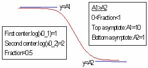

両側競合

数：5
パラメータの名前:A1, A2, log(x0_1), log(x0_2), f
意味:A1 =上側漸近線, A2 = 下側漸近線, log(x0_1) = 第一中心, log(x0_2) = 第二中心, f = 分数
下側境界:なし
上側境界:なし
nlf_competition2(x,A1,A2,LOGx0_1,LOGx0_2,f)
FITFUNC\COMP2.FDF
Pharmacology
 f}{1+10^{\left( x-\log x_{0\_1}\right) }}+\frac{\left( A_1-A_2\right) \left( 1-f\right) }{1+10^{\left( x-\log x_{0\_2}\right) }}")